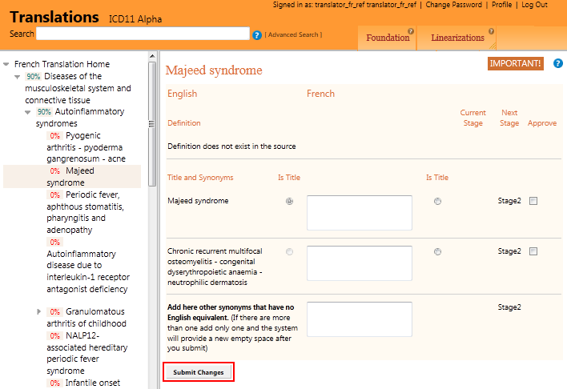
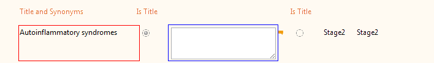
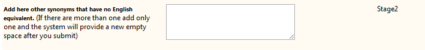
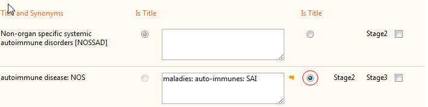
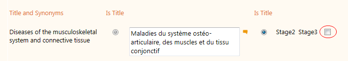
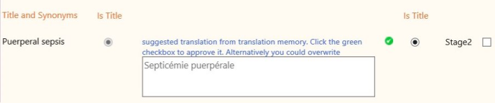
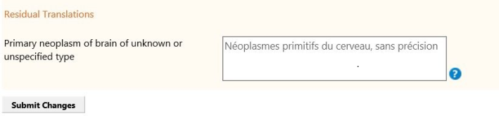
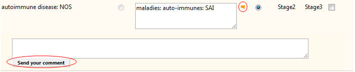
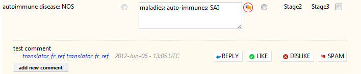

Translation Page for Individual Entities
The tool provides a page for each entity in ICD which is used to make the translations.
IMPORTANT! Information on Saving the Work
Please note that the changes you made will be saved only after you click the submit button.Navigation
Moving from one entity to another can be done in two ways
- Using the hierarchy on the left. This is similar to navigation in the ICD11 Browser
- Using the Search or Advanced Search functions.
Translation
For each individual text, you need to put the translation of the text on the left (shown in red rectangle) in to the edit box on the right (shown in blue rectangle).
In case there is an existing translation and you don't have the right to change it then the tool may display the existing translation in non-editable fashion.
Telling the system that the translation does not exist
Not all individual items in the English version will have translations. In such cases, the translator has to approve the empty text box. This will help us differentiate missing translations from terms that do not have a translation in a language
What if translation language has additional synonyms
In some cases the translation language will have additional synonyms. In such cases they have to be entered in the special area in the page. See below
Setting the Title
By default, the title of the ICD entity in the translated language is the text provided near the English title. Most of the times this is fine however, in certain situations, we don't want the most direct translation of the English title as the title in the translated language. The tooling provides a mechanism to select any synonym to become the title of the translation. This is done by clicking on the radio button under the Is Title column
Approving
In cases where there is an existing translation and you have the right to approve the translation, you will see a checkbox under the Approve column. Clicking this checkbox (and submitting using the button at the bottom of the page) will approve the translation and increase its Stage. In these cases, the system will tell you the current Stage as well as the Stage after approval.
Approving Suggested Translations coming from the Translation Memory
The translation platform uses a translation memory of translated phrases. And if a text matches an existing translation it will tell the user that it has a translation for the phrase. The translator could approve this by clicking on the green checkbox.
If the suggested translation is not appropriate, the translator could edit the text to set another translation
Residual Translations
Residual category title translations are automatically generated using some predefined rules per language. For example, in English, unspecified residual is created by adding ", unspecified" at the end of the title. However, in certain situations the translation generated by these rules are not good and need to be updated. The translation platform allows doing this at the Residual Translation
The system shows the auto-generated residual title in gray and if the user wants, this text can be overwritten by another translation
Commenting
Whenever there is a translation present, it is possible to write comments on it. This is done by clicking the comment icon which will display a comment edit area and then clicking the send your comment button
When there is already an existing comment, the comment button looks a little bit different. Clicking on it will let you read the existing comments and reply if you'd like to
In addition to reading the existing comments and writing a comment yourself you may do the following:
 REPLY : Reply to existing comments. Please note that you cannot reply to replies
REPLY : Reply to existing comments. Please note that you cannot reply to replies
LIKE : You may state that you've liked this comment
DISLIKE : You may state that you've disliked this comment
The number between the up and down arrows shows the sum of likes minus sum of dislikes.
SPAM : You may report that this particular comment is SPAM (i.e. not related to ICD or translation. May be an advertisement, etc.)